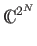

Not all functions on a quantum memory register preserve the superposition of the state vector. For example, measurement destroys the superposition in the register. Operations that collapse the state vector are called measurements, and any complex linear transformation of the state vector is called an operator. We can represent any operator on an N-bit quantum memory register in  as a matrix
Quantum mechanics imposes conditions on which linear transformations are legal operators. In particular, the operation must be reversible, and it must preserve the length of the state vector [9]. If we impose the condition that the sum of the kinetic and potential energy (called the Hamiltonian) of our quantum memory register is constant, then all legal operators have unitary matrix representations. A matrix T is unitary if the transpose of its complex conjugate is T-1 [9]. Systems with time-dependent Hamiltonians are not required to perform either Grover's or Shor's algorithm, and are not within the scope of this thesis.